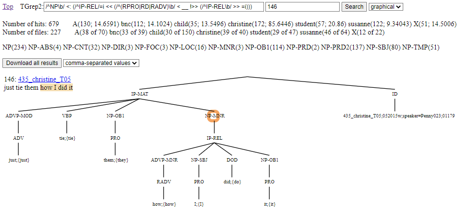
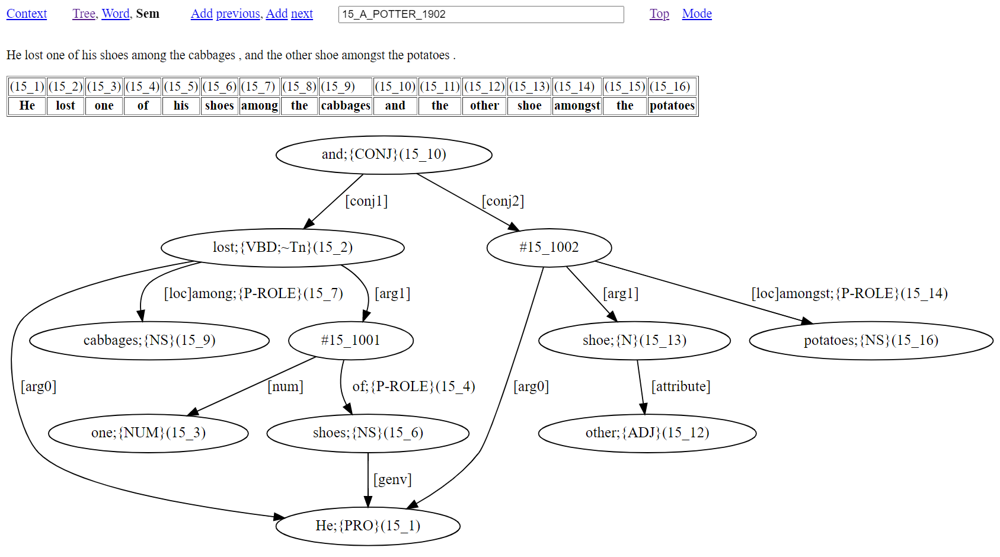

The search interface can be accessed here.
The search interface aims to give quick and simple access to the corpus content. The interface is useful for:
The interface gives direct access to the most up-to-date working files of the TSPC database.
The corpus overview page is the default entry point to the interface and is also reached by clicking the ‘Corpus overview’ link of any of the other pages. Other possible navigations through the interface are illustrated in Figure 1. Notably, the search pages and context page are intermediate steps for reaching a tree page. From a tree page, you can toggle between the other visualisation pages, or visit/return to the context page.
Figure 1: Map of the interface

The corpus overview page contains links for reaching the Grep and TGrep2 pages. There is also an ID field box with the functionality described in section 3 below. Finally, there are grouped listings of all the corpus files, with each list item serving as a clickable link to a context page for the corresponding file. If the ID text box field has content, then the listing of files will be restricted to those files with names that contain the given content, ignoring case distinctions. With the corpus consisting of over four hundred files, this provides a useful way to zoom in on file collections, especially as related files have related names. If there is no match for the content of the ID text box, then the overview page is left with no listed files.
The corpus overview page, context page, and visualisation pages all contain an ID text field box. When the corpus overview page is open, the ID box is blank by default. With the context page, the ID box contains the name of the shown file. With a visualisation page, the ID box contains the full ID name of the shown parse analysis. Multiple full ID names can be entered into the ID box when they are space separated, in which case a visualisation for all the referenced parse analysis is shown.
A full ID name for a given instance of parse analysis takes the form of a number followed by an underscore character (‘_’) and then the name of the file that contains the parse analysis.
The user is free to edit the content of the ID box, and then, by pressing the [ENTER] key, will jump to the corresponding page for the edited ID information. Note:
To understand the functionality of the interface, particularly the options for search, it is helpful to know about the underlying data format used by the TSPC. Each corpus file is a text file containing instances of parse analysis separated by blank lines. Each analysis instance begins with a line that presents the overall word yield for the analysis, where a word yield is the extraction of the terminal nodes of the tree, but without zero elements like relative clause traces. The yield is presented between opening and closing brackets with the form: ‘=N(" ’ and ‘ ")’. Following this opening line comes the parse analysis itself, with each word of the analysis placed at the end of its own line and accompanied by lemma information between curly braces with an initial semi-colon (‘;{’, ‘}’). Furthermore, each analysis line presents the path information from the root layer of the parse through to the word layer. The last line of a parse analysis instance is the ID node for the instance.
As examples, (1) shows the two opening instances of parse analysis from the file classics_POTTER_1902.txt:
Note that some nodes in (1) have extra markings: "CONJP;@3", "CONJP;@5", and "CONJP;@7" of 2_classics_POTTER_1902. If there are distinct nodes that are non-terminal with the same tag and the same preceding path, then extra marking is required to ensure these nodes are uniquely distinguished when considering multiple paths. The convention followed for extra marking includes ‘;@n’ for the n-th sister node of a shared preceding path.
The analysis of (1) demonstrates some key aspects of the annotation scheme:
The data format of (1) is easy to edit, especially with a text editor capable of multi-line editing. It is notable that edits will always maintain balanced regularised tree structure. But what is most significant is that the format allows for quick and simple line and table based post-processing. As a case in point, an overview can be returned for items that have a particular word class. (This is accessed from link items that make up a listing of all tags, displayed on the Grep or TGrep2 pages when the search field is empty.) Figure 2 shows the result for all words in the corpus that are tagged RPRO (relative pronoun). This information is presented with the lemma of the word serving as a link to a Grep search for the lemma followed by a list within brackets of the particular attestations of the lemma with a count of instances after a colon.
Figure 2: Words marked as relative pronouns (RPRO)
As an example of a line extracted overview which requires information beyond the word class layer of structure, Figure 3 gives a table with function markings (ABS=absolute, BNF=benefactive, CNT=contingency, etc.) and the lemmas of adverbs that realise the particular function, all with counts, and also serving as clickable links to Grep searches for probing deeper into how the adverb lemma with the particular referenced function occurs in the data.
Figure 3: Function marking with prepositions (P-ROLE)

To support TGrep2 search, the TSPC native format of (1) is converted into bracketed trees with a TOP node, as in (2).
Note that with conversion to bracketed trees, ‘;@n’ markings of nodes are removed, since nodes appear only once within the bracketed structure and so are always distinct.
The context page gives a link for reaching the corpus overview page, followed by an ID field box that will contain the name of the file that is being shown. This ID field box has the functionality already described in section 3. The remainder of the page consists of a table with two columns. The first column provides numbers for file content that has been given parse analysis. Each number forms a link for opening the instance of parse analysis in a tree page. The second column contains the yield content for the referenced analysis, extracted as the line content from the source data between ‘=N(" ’ and its closing ‘ ")’, which is typically the content of a single sentence. With no processing of the source data being required to extract the yield, context pages are quick to render.
The interface provides two different methods for searching the corpus: the Grep page (section 6.1) and the TGrep2 page (section 6.2).
The Grep page gives a link for returning to the corpus overview page, and a text field box for entering a grep search pattern. There is a second field box for entering a number. If the search text box is blank, then there are tables listing the full tag set used in the corpus. A search begins when the ‘Search’ button is clicked, or after a search pattern is entered into the text field box and the [ENTER] key is pressed.
Search is made using the grep command (Magloire et al. 2021) under a recursive call (grep -nr) in a directory that contains the corpus data in the native corpus format described in section 4, and illustrated with (1). Aside from making changes to the search pattern, there is no other way to restrict the searched data.
Figure 4 illustrates using the Grep page to find instances of the string against in the corpus. The results page tells us the number of lines found to match the search expression. This is followed by a display of the results in a tabled format with three columns. The first column is the hit number following corpus order, that is, with line matches taken from files following an alphanumeric sort of the corpus filenames. The second column consists of possibly coloured cells that contain the full content of a matched line from the corpus data. The third column contains information about the line number followed by an underscore character (‘_’) and then the filename for the reported content. This line number and filename serve as a link to a tree page for the overall linked instance of parse analysis, with the terminal node for line content highlighted in the resulting tree of the reached tree page.
Figure 4: Grep search for against

The colouring of cells in the second column depends on the cell content as follows:
The colouring of cells is a notable aid for being able to easily pick up on differences in the annotation, especially as a search can bring together lines from throughout the corpus.
As figure 4 demonstrates, a Grep search is useful for searching through the yield lines of the annotation. Any search that involves a space character will automatically be restricted to finding its matches from only yield lines. When the matched line is a yield line from the corpus data which (as seen with (1) above) consists of a line with opening and closing brackets with the form: ‘=N(" ’ and ‘ ")’, these opening and closing brackets are removed from the shown result and the segment of the line that matches the search expression is highlighted.
Search pattern (3) will find instances of the lemma {against} restricted to having the P-ROLE (preposition) word class that occurs in a preposition phrase with -CNT (contingency) function.
Note that the double quotes character (") cannot be used in grep search patterns made with the interface. In pattern (3), mention of double quote characters is avoided with use of the dot (‘.’) character, which matches any single character. Figure 5 shows the top of the results page from searching with (3), with the number of matched lines now restricted to nineteen lines.
Figure 5: Grep search for lemma {against} occuring as a preposition with contingency function

If there are no yield results and the number of matched lines is less than 100 (as in Figure 5), then a ‘See all results’ link is provided for opening in a tree page a display of all results as trees.
Up to 2500 matched lines are returned following corpus order. That returned matches follow a set order is important because this allows for the potential of contextual information being seen across returned lines. Quite where in the corpus order the search results start from is established either (i) by a start number entered into the number field that is adjacent to the text field box for entering a grep search pattern, or, (ii) when the start number field is empty, through the random creation of a start number. If there are more than 2500 results, you can see a different batch of 2500 results by re-running the search with a different start number.
With returned line results following corpus order, full constituents appear as adjacent lines when the search expression matches constituent level nodes. This is demonstrated in Figure 6, with its search expression finding IP-REL (relative clause) nodes. Results start from line match 43606.
Figure 6: Search for IP-REL (relative clause)
When there are no yield line matches, a ‘Toggle’ link appears. Clicking ‘Toggle’ of Figure 6 opens the page of Figure 7. Clicking ‘Toggle’ again returns back to Figure 6.
Figure 7: Search for IP-REL (relative clause) after toggle
The page of Figure 7 shows the same results as Figure 6 only as tree fragments. Tree fragments are given an ID node that consists of a line number corresponding to the last line that goes into making up the tree fragment and its filename. These ID nodes serve as a link to a tree page for the overall linked instance of parse analysis, with the terminal node for the numbered line content highlighted. Other nodes serve as links to trigger a Grep search for the node label that opens to a page displaying tree fragment results. All this functionality assists finding related examples including inconsistencies and errors in the annotation. Because the underlying search is performed with Grep, results are gathered from the source data files almost instantly.
The TGrep2 page gives a link for returning to the corpus overview page, and a text field box for entering a TGrep2 search pattern. There is a second field box for entering a start number. There is also a pull-down-selector for choosing between two methods for displaying results:
If the search text box is blank, then there are tables listing the full tag set used in the corpus. A search begins when the ‘Search’ button is clicked, or after a search pattern is entered into the text field box and the [ENTER] key is pressed.
Search is made using the tgrep2 command (Rohde 2005) over all the corpus data in a binary database built from data that was first converted into the bracketed format described in section 4, and illustrated with (2). Aside from making changes to the search pattern, there is no other way to restrict the searched data.
TGrep2 search patterns consist of expressions to match nodes and relationships defining links or negated links to other nodes. Nodes of searched trees are matched either with simple character strings, or OR'd character strings, or extended regular expressions. A complex node expression consists of a node expression (the master node) which is followed by relationships. Also, nodes can be assigned labels and may be referred to elsewhere in the pattern by those labels. For a full explanation of this query language, click the ‘Guide’ link.
As an example, consider pattern (4) which finds free relatives.
The tree relation ‘<:’ of (4) states that a matched IP-REL node is the only daughter of a matched NP node. The NP node is the master node found by the overall pattern. Brackets ensure that other conditions of the pattern concern the need for the matched IP-REL node to contain a relative word (that is, a word tagged as either RPRO, RD, or RADV) without there being a distinct intervening IP layer.
After a query is made, at the top of the page, the search reports the number of hits found, and the number of texts that contain hits. There will also be a button near the top of the page for downloading the search results.
Figure 8 illustrates the display of results as tree yields. Content corresponding to what is matched by the master node of the query is highlighted. Zero elements (e.g. relative clause traces) are typically not shown in tree yields, but will appear highlighted if they happen to be the matched segment. Each returned tree yield with its single highlighted segment is given a hit number. The hit number doubles as a link to the tree view page for the given tree yield. Up to five hundred yield results are shown in corpus order. If there are more than five hundred results, you can see different yields by re-running the search after changing the number of the start number field (which is 44 in Figure 8).
Figure 8: Example of tree search results as tree yields

Figure 9 illustrates the display of results as graphical trees. Results are displayed as trees, with content that matches the master node of the search pattern highlighted. The ID node of a shown tree works as a link for accessing the same tree in a tree view page. A yield of the tree is also given with highlighted content corresponding to what is matched by the master node of the query. Up to fifty tree results are shown in corpus order. If there are more than fifty results, you can see different trees by re-running the search after changing the number of the start number field (which is 44 in Figure 9).
Figure 9: Example of tree search results as tree graphical trees
You can download all TGrep2 search results by clicking the ‘Download all results’ button. The download will give as many entries as there are hits reported, with a single hit per entry. Results are listed in corpus order, so a re-run of a download will give you the same download (assuming the corpus hasn't changed inbetween). There is a pull-down-selector for choosing between two methods for obtaining results:
The comma-separated values format is simple for loading into a spreadsheet program. Each entry consists of a row with four columns. The first column is the ID for the example. The second column is the yield of content before the hit. The third column is the yield of the hit. The fourth column is the yield of content after the hit. For example, pattern (5) finds indirect objects that directly contain a relative clause, which obtains the downloaded comma-separated value results of Figure 10.
| A | B | C | D | |
|---|---|---|---|---|
| 1 | 113_bnc_C05 | This meant that loyalty forbade her to tell | Philip <mdash> who would n<apos>t have believed her in any case | . |
| 2 | 125_samples_BUFFALO | I gave | the man who wanted it | the book that he asked for . |
| 3 | 126_samples_BUFFALO | A man who smiled gave | a woman he saw | a book that she asked for . |
| 4 | 78_susanne_A05 | Action on a new ordinance permitting | motorists who plead guilty to minor traffic offenses | to pay fines at the local police station may be taken at Monday <apos>s special North Providence Town Council meeting . |
| 5 | 95_susanne_N13 | <ldquo> Rheumatics worse , Pa <rdquo> ? Dan asked | Hez , who had limped back from his team to hold the notched <hyphen> stick chair braces in place while his boys swung up the tailgate and tied it tight at the ends | . |
The trees of a bracketed download are formatted to be compatible with the CorpusSearch program (Randall 2009; http://corpussearch.sourceforge.net/CS-manual/YourCorpus.html). For example, pattern (5) obtains the downloaded trees of Figure 11.
Figure 11: An example of downloaded results in the bracketed format
( (IP-MAT (NP-SBJ (D This;{this})) (VBD meant;{mean}) (CP-THT-OB1 (IP-SUB (C that;{that}) (NP-SBJ (N loyalty;{loyalty})) (VBD forbade;{forbid}) (NP-DOB1 (PRO her;{her})) (IP-INF-OB1 (TO to;{to}) (VB tell;{tell}) (__NP-OB2 (NPR Philip;{Philip}) (PU <mdash>) (IP-REL (NP-SBJ (RPRO who;{who})) (MD would;{will}) (NEG n<apos>t;{not}) (HV;~cat_e have;{have}) (IP-PPL-CAT (VVN believed;{believe}) (NP-OB1 (PRO her;{her})) (PP-CNT (P-ROLE in;{in}) (NP (D any;{any}) (N case;{case}))))))))) (PU .)) (ID 113_bnc_C05@24))Under CorpusSearch format, every tree has a ‘wrapper’. A wrapper is a pair of unlabelled parentheses surrounding the tree content together with an ID node. An extension consisting of the ‘@’ character and a number is added to the ID node of each tree. Following depth-first order, this number picks out the node that matched as the master node. In addition, the label of the picked out node is also prefixed with two underscore characters (‘__’).
The interface provides three different modes for visualising consequences of parse analysis: the tree page (section 7.1); the word page (section 7.2); and the graph page (section 7.3). These pages all have an ID text field box that will contain the full name(s) for the analysis being shown. The content of the ID box can be edited, as described in section 3.
At the top of each page, in addition to the ID box, there is also:
The tree page shows a tree visualisation of an instance of parse analysis. If multiple parse analysis IDs appear in the ID text field box, then a tree for each ID is shown. In the case of multiple trees being shown, each tree is preceded by an ID heading that works as a link for opening the same tree in a new tree view page. Nodes of a tree can be clicked and will take you to a Grep search for the clicked node element.
Figure 12 illustrates the tree page with parse analysis for (6).

The word page shows the word analysis of an instance of parse analysis. If multiple parse analysis IDs appear in the ID text field box, then word analysis for each ID is shown. Figure 13 illustrates the word page with word analysis for (6).

As Figure 13 shows, word analysis is presented in a tabled format with three main columns for words. The first column is for a word as it occurs in the source sentence(s). The second column presents the word class of the word from the first column. If the word is a verb associated with a grammar pattern, then this pattern information is also presented and highlighted with yellow. The third column presents information about the word of the first column with minimally a word lemma. If the word is a lexical word then it is also given sense definitions from a dictionary database. Moreover, if the word is a verb then the grammar pattern information is used to highlight compatible sense definitions with yellow, and leave other sense definitions shaded grey. Sense definitions with grammar codes are sourced from Cowie (1989). If the word is a verb without a grammar pattern, then all the cells containing sense numbers for the associated sense definitions are coloured red (reflecting outstanding annotation work).
The graph page shows a graph visualisation of semantic dependencies for parse analysis produced by the Treebank Semantics evaluation system (Butler 2021). If multiple parse analysis IDs appear in the ID text field box, then a single graph is calculated from all the parse analysis of the given IDs. Figure 14 illustrates the graph page.

In a graph, word content for source sentences is found outside of square brackets (‘[’, ‘]’) and is always accompanied by (i) content between curly braces (‘{’, ‘}’) to say the word class of the word, and (ii) numbering inside round brackets (‘(’, ‘)’) to say the word position within the source sentence(s). Word position numbering involves two numbers separated by an underscore character (‘_’). The second number says which source sentence the word belongs to. The first number says the position of the word within its source sentence.
Square bracket content tells us about how words function, e.g. [ARG0]=logical subject, [DIR]=direction role. It is most typical for square bracket content to be part of the label for a directed arrow that connects graph nodes.
Most words from source sentences have a presence within the corresponding graph, however some words make a contribution that has to be seen in terms of consequences for graph nodes and their dependencies. Missing words include words that are used to make reference to what is talked about, with node presence capturing the reference contribution. These words can be either:
Note that unbound pronouns do have graph presence, as seen with He in Figure 15 below.
Other words with no graph presence are:
It is also possible for word content to involve the ‘#’ symbol. This marks a word absence due to phrase head or verb elision in the source sentence. For example, consider (7).
Figure 15 shows the graph that is generated by the interface from a parse of (7).
Figure 15: An example with elision
The graph of Figure 15 has two verbs connected by [conj1] and [conj2] arrows from and(10_15) occuring topmost in the graph. While the verb of the first conjunct is overtly realised with lost(2_15), the content for the verb of the second conjunct is shown as #2_15 to indicate the licensed absence of a verb (a lost lost!). One further instance of ‘#’ occurs in the graph (referenced as #1_15) to indicate a nominal head absence that has [num] (numeral modifier) and ‘of’ (role preposition) links. Note that the indexing with ‘#’ involves two numbers without round brackets. The second number says which solution sentence the elision belongs to. The first number follows a count of the number of elision instances that occur within the sentence. This gives indexing that is distinct from the word location indexing within round brackets that accompanies each word.
Butler, Alastair. 2021. Meaning representations from treebanks. The Treebank Semantics Web Site. Available at: http://www.compling.jp/ajb129/ts.html.
Cowie, A P. 1989. Oxford Advanced Learner's Dictionary, Fourth Edition. Oxford: Oxford University Press.
Magloire, Alain et al. 2021. GNU Grep: Print lines that match patterns, version 3.7. Free Software Foundation.
Randall, Beth. 2009. CorpusSearch 2 Users Guide. Available at: http://corpussearch.sourceforge.net/CS-manual/Contents.html.Rohde, Douglas. 2005. TGrep2 User Manual version 1.15. Available at: https://github.com/andreasvc/tgrep2.